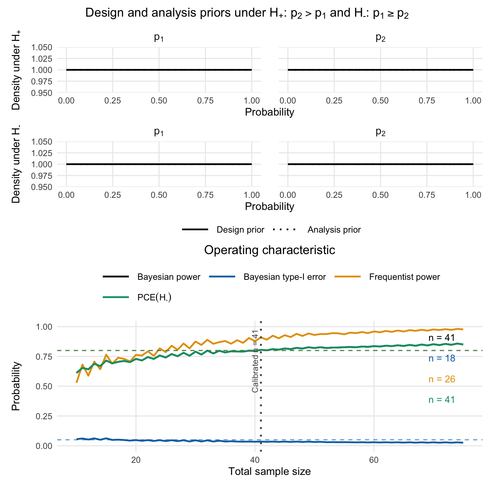
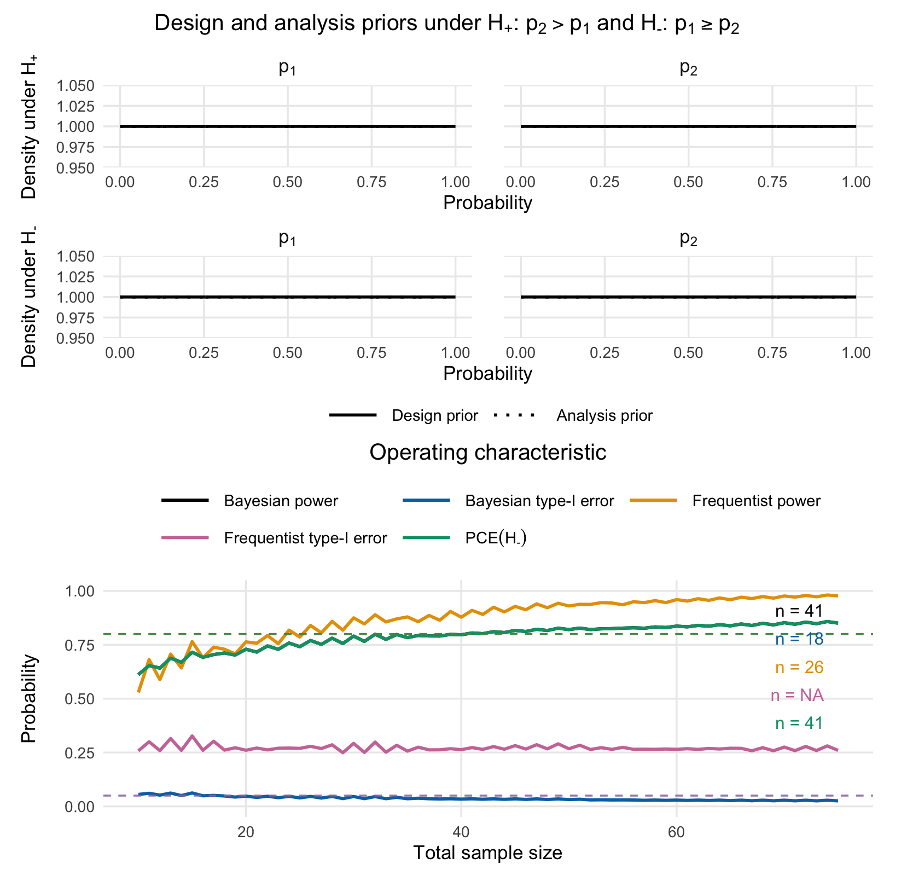
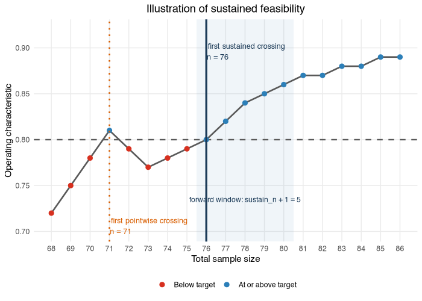
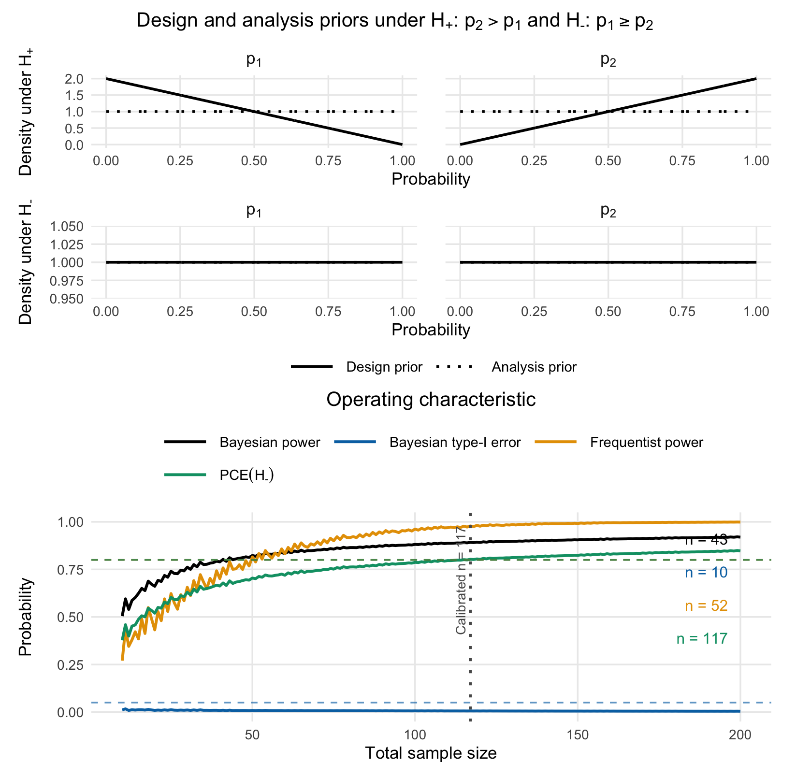
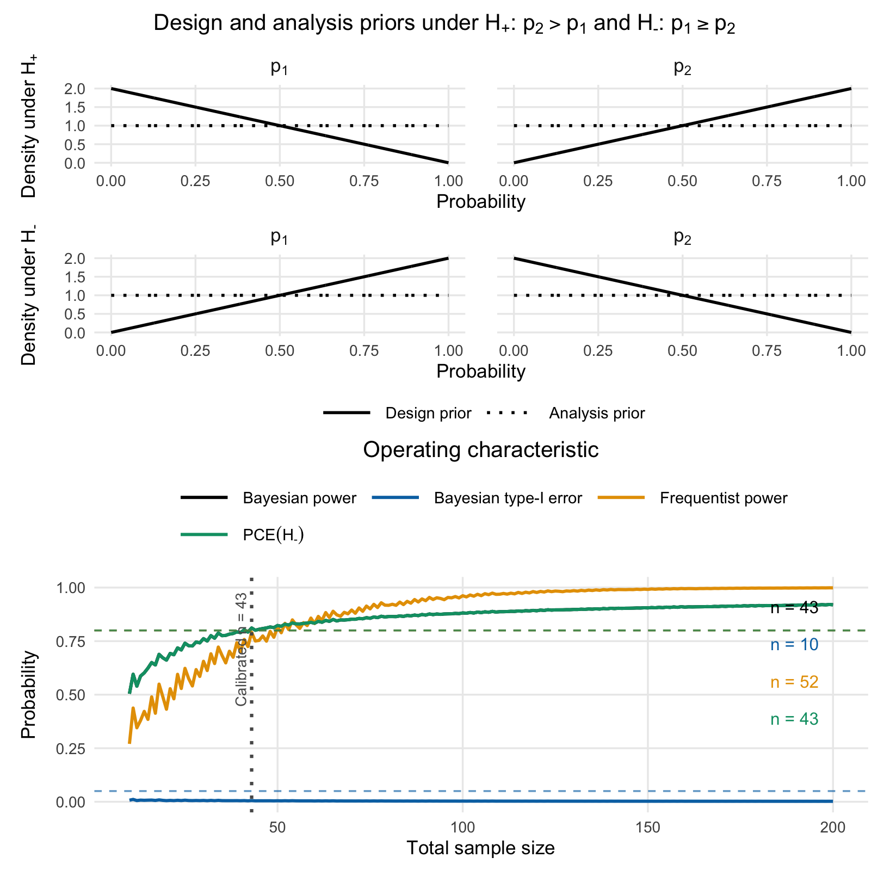
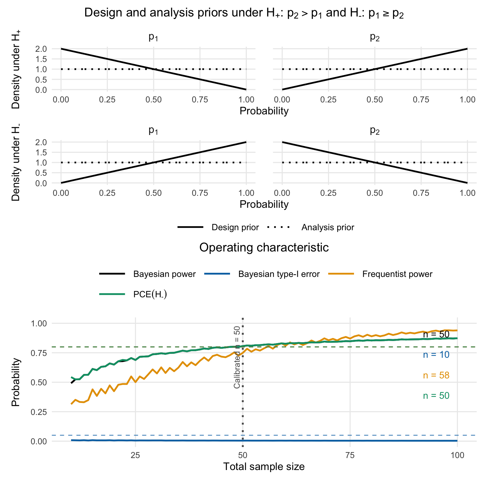
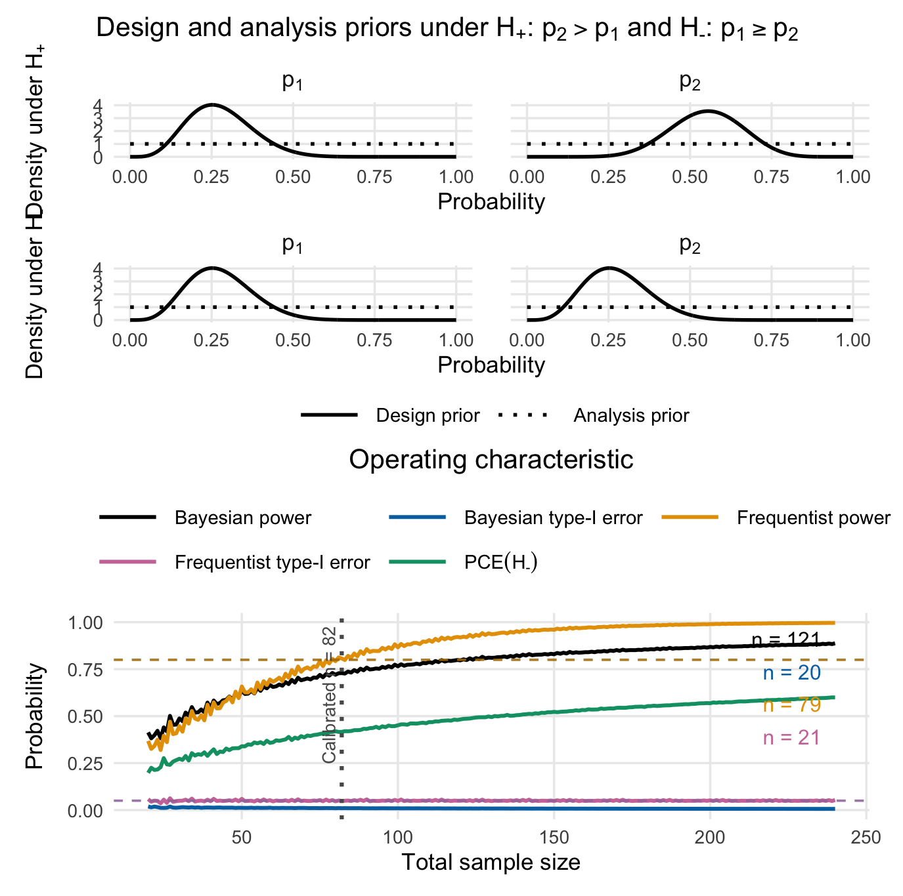

Bayesian calibration of two-arm one-stage Bayes factor designs with binary endpoints
Riko Kelter
Institute of Medical Statistics and Computational Biology
Faculty of Medicine
University of Cologne
Cologne, Germany
Institute of Medical Statistics and Computational Biology
Faculty of Medicine
University of Cologne
Cologne, Germany
12 November 2026
bfbin2arm-twoarm_onestage_Bayesian.RmdIntroduction and Overview
In this vignette, we illustrate how to calibrate a two-arm one stage phase II design with binary endpoints from a Bayesian perspective. Details on the methodology can be found in (Kelter 2026). Our main assumption here is that the observed data in both groups are from two random variables which both follow a binomial distribution with parameters and and respectively ,
Hypothesis tests
In its current form, the package implements four different hypothesis tests for such trials:
Alternatively, a well-known parameterization of this test introduces a difference parameter and the grand mean . Using this parameterization, we have
and the hypotheses can be rewritten as:
Next to this two-sided test, three directional tests are available in the package:
For each of the four tests, a separate Bayes factor exists and can be used. For the two-sided test, we denote the Bayes factor as , and for the three directional tests above we denote the Bayes factors as , and . Thus, the test of versus can also be written as versus .
Design and analysis priors
The distribution is a conjugate prior for the binomial likelihood, and when chosen as the prior, the posterior is also Beta-distributed. A natural choice for the priors is the beta distribution. We assume independent Beta design priors as follows:
Thus, under , both probabilities are identical, , and take some value , which has a beta design prior. Likewise, we pick independent Beta design priors under :
For the analysis priors , under , we also choose independent Beta priors, with possibly different values and for , where the superscript signals that the hyperparameters belong to our analysis instead of design prior:
Lastly, for the analysis prior under , we choose a Dirac prior with all probability on conditionally on a uniform prior on , that is
for the analysis with the Bayes factor.
Using the package
First, we load the package after installation:
Next, we illustrate the main calibration function for a two-arm
one-stage trial by re-analyzing a phase II trial in the context of
oncology. While no Bayesian approach was used in the original
statistical analysis of the trial, the step-by-step walktrough below
showcases how a structured approach to designing and calibrating a
Bayesian two-arm one-stage phase II trial with the
bfbin2arm package looks like. Importantly, the trial must
have two trial arms (treatment and control) and binary endpoints. We
assume further that one of the four tests detailed above is carried out
using Bayes factors as the test criterion.
Clinical Example 1: The ICT-107 glioblastoma phase II Trial
The ICT-107 trial (Wen et al. 2019) was a randomized phase II study in newly diagnosed glioblastoma patients (n=124, 2:1 randomization). The primary binary endpoint is progression status at 6 months (PFS6), and the secondary binary endpoint immunologic status. Here, we focus on the secondary endpoint for illustration purposes.
Reported results (ITT population):
- ICT-107 (n=82): 49/82 responders= 59.7% response rate
- Control (n=42): 12/42 responders = 35.7% response rate
1. Bayes Factor Analysis
We start by calculating the Bayes factor(s) for the ICT-107 trial data:
## -------------------------------------------------------------
## 2. ICT-107 trial (immunologic response)
## Placebo (control): 12 responders, 31 non-responders
## ICT-107 (treatment): 49 responders, 32 non-responders
## -------------------------------------------------------------
y1_ict <- 12 # control successes
n1_ict <- 12 + 31
y2_ict <- 49 # treatment successes
n2_ict <- 49 + 32
cat("\n=== ICT-107 Trial (n1 =", n1_ict, ", n2 =", n2_ict, ") ===\n")
#>
#> === ICT-107 Trial (n1 = 43 , n2 = 81 ) ===
# BF01
BF01_ict = twoarmbinbf01(y1_ict, y2_ict, n1_ict, n2_ict,
a_0_a = 1, b_0_a = 1,
a_1_a = 1, b_1_a = 1,
a_2_a = 1, b_2_a = 1)
# BF+1
BFp1_ict = BFplus1(y1_ict, y2_ict, n1_ict, n2_ict,
a_1_a = 1, b_1_a = 1,
a_2_a = 1, b_2_a = 1)
# BF-1
BFm1_ict = BFminus1(y1_ict, y2_ict, n1_ict, n2_ict,
a_1_a = 1, b_1_a = 1,
a_2_a = 1, b_2_a = 1)
# BF+0
cat("=== ICT-107 Trial === Bayes factor BF+0 results in ", BFplus0(BFp1_ict, BF01_ict))
#> === ICT-107 Trial === Bayes factor BF+0 results in 186.6192
# BF+-
cat("=== ICT-107 Trial === Bayes factor BF+- results in ", BFplusMinus(BFp1_ict, BFm1_ict))
#> === ICT-107 Trial === Bayes factor BF+- results in 3702.659The most relevant Bayes factor here is
,
because it is directional and leaves open the possibility of the placebo
group having a larger response rate than the treatment group. Note that
the hyperparameters of the beta analysis priors are specified in
twoarmbinbf01 via a_0_a = 1, b_0_a = 1 et
cetera.
2. Operating characteristics for actual sample sizes
Now, a key question is which operating characteristics can be
expected based on the actual sample sizes used in the trial. The
powertwoarmbinbf01 function can provide the answer:
ict_results <- powertwoarmbinbf01(
n1 = n1_ict, n2 = n2_ict,
k = 1/3, k_f = 3,
test = "BF+-", # H+: p2 > p1 vs H-: p2 <= p1
a_0_d = 1, b_0_d = 1, a_0_a = 1, b_0_a = 1,
a_1_d = 1, b_1_d = 1, a_2_d = 1, b_2_d = 1,
a_1_a = 1, b_1_a = 1, a_2_a = 1, b_2_a = 1,
output = "numeric",
compute_freq_t1e = TRUE,
)
print(ict_results)Power Type1_Error
0.8788106 0.0214111
CE_H0 Frequentist_Type1_Error
0.8788106 0.2871811
attr(,"hypothesis")
[1] "H[+]:~p[2] > p[1] ~~ vs ~~ H[-]:~p[2] <= p[1]"
attr(,"compute_freq_t1e")
[1] TRUEWe see that based on the actual sample sizes and a moderate evidence
threshold
,
the Bayesian power is sufficiently large with
.
Still, the frequentist type-I-error rate is way too high with
,
so we increase the evidence threshold to
(strong evidence) and use the ntwoarmbinbf01 function to
calibrate the design based on our requirements next.
3. Power and sample size planning
The core working function to design a Bayesian two-arm one-stage
trial with the package is the design_twoarm_onestage_bf()
function. It searches over a grid of total sample sizes and returns a
design object that contains
- the selected sample sizes in each arm (
n1,n2) and their sum (n_total) - Bayesian and frequentist operating characteristics at the chosen design
- the full search grid with pointwise and sustained feasibility indicators
- the calibration targets and input priors used in the search.
Internally, the function uses the same numerical engine as the legacy
ntwoarmbinbf01() function, but exposes a richer,
object-based interface and S3 methods for printing, summarizing, and
plotting. The old function ntwoarmbinbf01() remains
available as a compatibility wrapper that now returns the same design
object.
First, we perform a sample size search for an ICT-107-type trial (balanced arms) under flat design priors and substantial evidence thresholds, using the directional Bayes factor . Note that evidence in favour of happens when for . Internally, the function therefore uses the Bayes factor when calibrating the design, but for our purposes this does not matter. Selecting will use the directional test we intend to use when calibrating our design:
des <- design_twoarm_onestage_bf(
n_min = 10,
n_max = 75,
k = 1/3,
k_f = 3,
test = "BF+-",
calibration = "Bayesian",
target_power = 0.80,
target_type1 = 0.05,
target_ce_h0 = 0.80,
# design and analysis priors: flat Beta(1,1) everywhere
a_0_d = 1, b_0_d = 1,
a_0_a = 1, b_0_a = 1,
a_1_d = 1, b_1_d = 1,
a_2_d = 1, b_2_d = 1,
a_1_a = 1, b_1_a = 1,
a_2_a = 1, b_2_a = 1,
# assumed true proportions for frequentist power (optional here)
p1_power = 0.3, p2_power = 0.6,
report_freq_type1 = TRUE,
# equal randomisation
alloc1 = 0.5,
alloc2 = 0.5,
# require sustained feasibility over the next 10 larger n
sustain_n = 10L,
progress = FALSE
)We can summarize or print the results with the print()
and summary() methods:
summary(des)Summary: One-stage two-arm Bayes factor design
---------------------------------------------
Mode: optimal
Status: Smallest feasible one-stage two-arm design found.
Calibration: Bayesian
Feasible: yes
Search overview
n evaluated = 66
pointwise feasible = 35
sustained feasible = 35
first pointwise n = 41
first sustained n = 41
Selected design
n_total = 41, n1 = 20, n2 = 21Also, we can plot the results:
plot(des)
Figure 1: Visualization of the calibrated Bayesian two-arm one-stage phase II design with a binary endpoint
The summary and plot show that for the range of sample sizes provided
to the function, under flat design priors, recruiting
patients in total satisfies the requirement of Bayesian power
.
In general, if we want to obtain a calibrated design we can either
increase n_max if no calibrated design is found in a search
range, or choose more informative design priors. Alternatively, we could
shift to a less stringent threshold for evidence
,
e.g.
instead of
,
so it becomes easier for the Bayes factor to accumulate evidence in
favour of
.
The arguments correspond closely to the conceptual requirements:
-
kis the evidence threshold for rejecting the null (inverted Bayes factor). Here,k = 1/10corresponds to moderately strong evidence against the null. -
k_fis the threshold for compelling evidence in favour of the null (here, in favour of ). -
calibrationselects which constraints to enforce:"Bayesian"uses Bayesian power, type-I error, and CE(H0);"frequentist","hybrid", and"full"add frequentist constraints. Frequentist calibration implies that frequentist power and type-I-error rare calibrated, hybrid calibration implies that Bayesian power and frequentist type-I-error are calibrated, and full calibration implies that both frequentist and Bayesian power and type-I-error are calibrated. -
target_power,target_type1, andtarget_ce_h0are the Bayesian calibration targets. -
p1_powerandp2_powerspecify the assumed proportions for frequentist power (when used), here and . -
alloc1andalloc2specify randomisation probabilities for control and treatment; here we use equal allocation.
The resulting object des shows in its print and summary
output whether a feasible design was found and, if so, which sample
sizes and operating characteristics are selected. The old three-panel
plot is now available via
plot(des, type = "old")which reproduces the original
ntwoarmbinbf01(output = "plot") visualisation. For this
default plot, it is also possible to just call
plot(des)In addition, two more compact plot types are provided:
plot(des, type = "oc") # operating characteristics across n_total
plot(des, type = "feasibility") # pointwise vs sustained feasibility across n_totalThe old function ntwoarmbinbf01() is still available for
backward compatibility. It now returns the same design object as
design_twoarm_onestage_bf() and internally calls that
function. A simple compatibility call is:
des_legacy <- ntwoarmbinbf01(
k = 1/3, k_f = 3,
power = 0.8, alpha = 0.05, pce_H0 = 0.8,
test = "BF+-",
nrange = c(10, 75), n_step = 1,
progress = FALSE,
compute_freq_t1e = TRUE,
p1_power = 0.3, p2_power = 0.6,
alloc1 = 0.5, alloc2 = 0.5,
output = "numeric"
)We plot the results:
plot(des_legacy, type = "old")
Figure 2: Visualization of the calibrated Bayesian two-arm one-stage phase II design with a binary endpoint
This code path is mainly intended for users with existing scripts;
new analyses should use design_twoarm_onestage_bf()
directly.
4. Informative design priors
The example above used flat design priors, which might be unrealistic
in a variety of settings. While it would be possible to increase the
maximum sample size n_max in the search range to eventually
find a calibrated trial design, a more helpful approach is to use
informative design priors. Such design priors should reflect the
expectations investigators have about the effect of a novel drug or
treatment. In particular, it is strongly recommended to use at least
slightly informative design priors, because if no expectation about the
effect of the drug or treatment (e.g. due to prior phase I trials) is
made, this might be unrealistic from a practical point of view. Not only
is the question why and whether a phase II trial should be conducted in
such a case. Using flat design priors is highly unrealistic in several
aspects:
- Suppose flat design priors are assumed under for the treatment and the control group. We focus on the treatment group just for a moment. All parameter values inside the unit interval are being assigned the same prior probability density value. As a consequence, all parameter values (or small regions around them, as from a measure theoretic-point of view single parameter values have prior probability of exactly zero) are equally likely a priori before any data are observed. This implies, that e.g. success probabilities like are equally likely a priori as , which in almost all phase II trials would be a very questionable assumption for the treatment group in the two-arm setting.
- Using flat design priors under both and implies that when the null hypothesis is true and holds, all parameter values (the success probability in the control group) less than or equal to are equally likely a priori. However, in most phase II trials investigators would argue that extremely large differences in the success probabilities between both trial arms are less likely a priori than smaller ones. As a consequence, a more informative design prior under which places more mass at the boundary region could be more realistic.
Next, we therefore perform a sample size search for the ICT-107-type
trial (balanced arms) under informative design priors with very strong
evidence thresholds k = 1/30 and k_f = 30.
Notice the additionally specified parameters
a_1_d = 1, b_1_d = 2 and a_2_d = 2, b_2_d = 1
which are the design prior hyperparameters of the Beta design priors for
and
under
.
These express slight optimism about the treatment effect in the sense
that they can be thought of as having already observed 1 success and 2
failures in the control group and 2 successes and 1 failure in the
treatment group. Also, we lower our requirements for the probability of
compelling evidence in favour of
to, say,
.
We additionally require the reporting of the frequentist type-I-error
for the calibrated design by specifying
report_freq_type1 = TRUE in the function call:
des_informative <- design_twoarm_onestage_bf(
n_min = 10,
n_max = 200,
k = 1/10,
k_f = 10,
test = "BF+-",
calibration = "Bayesian",
target_power = 0.80,
target_type1 = 0.05,
target_ce_h0 = 0.80,
# design and analysis priors: flat Beta(1,1) everywhere
a_0_d = 1, b_0_d = 1,
a_0_a = 1, b_0_a = 1,
a_1_d = 1, b_1_d = 2,
a_2_d = 2, b_2_d = 1,
a_1_a = 1, b_1_a = 1,
a_2_a = 1, b_2_a = 1,
# assumed true proportions for frequentist power (optional here)
p1_power = 0.3, p2_power = 0.6,
# report frequentist type-I-error? (optional here)
report_freq_type1 = TRUE,
# equal randomisation
alloc1 = 0.5,
alloc2 = 0.5,
# require sustained feasibility over the next 10 larger n
sustain_n = 10L,
progress = FALSE
)We summarize the results:
summary(des_informative)Summary: One-stage two-arm Bayes factor design
---------------------------------------------
Mode: optimal
Status: Smallest feasible one-stage two-arm design found.
Calibration: Bayesian
Feasible: yes
Search overview
n evaluated = 191
pointwise feasible = 85
sustained feasible = 84
first pointwise n = 115
first sustained n = 117
Selected design
n_total = 117, n1 = 58, n2 = 59The output shows that the first feasible sample size for which the target constraints hold was . However, as we require the next ten sample sizes for the operating characteristics not to violate their respective constraint (that is, power should not decrease below its specified target threshold, type-I-error not increase above its specified target threshold and probability of compelling evidence not drop below its specified target threshold for the next ten observations), the first sample size for which this holds is . This leads to the selected design with and patients in the control and treatment group.
Details on the implementation: For each operating
characteristic we also compute a metric‑specific sustained attainment
sample size that respects the user‑supplied sustain_n constraint.
Concretely, we form separate logical indicators over the search grid for
Bayesian power (≥ target_power), Bayesian type‑I error (≤target_type1),
CE(H0) (≥target_ce_h0), and frequentist power (≥target_freq_power).
Given such an indicator vector for a particular metric, we then search
for the first total sample size
such that the metric’s target is satisfied not only at
,
but also for all subsequent total sample sizes in the forward window of
length sustain_n + 1, truncated at the upper end of the
search range. The vertical reference lines in the diagnostic plots are
drawn at these metric‑specific sustained crossing points. This ensures
that the plotted “required” sample sizes reflect the same sustained
feasibility logic as the calibration itself, so that, for example,
Bayesian power may first reach its nominal threshold at
,
but the corresponding vertical line will only be shown at
if the power constraint fails to remain satisfied over the next
sustain_n total sample sizes.

The above figure illustrates the sustained feasibility logic which currently is implemented in the calibration algorithm. For in this toy example, andsustain_n + 1 = 5, even though the
threshold of 80% is achieved, the sample size eventually selected is
.
For
,
the next
sample sizes up to
satisfy the operating characteristic threshold of at leat 80%, which is
not the case for
.
Now, back to our calibrated design. We plot the results:
plot(des_informative)
Figure 3: Visualization of the calibrated Bayesian two-arm one-stage phase II design with a binary endpoint, using informative design priors under the alternative hypothesis
We see that now the Bayesian power is calibrated for patients per trial arm and does not drop below the required 80% for at least the next ten sample sizes (it does not drop below the 80% for any sample size up to , as can be verified by the plot). Frequentist power is calibrated for patients trial arm already. The Bayesian type-I-error is already calibrated for , requiring only patients per trial arm. Importantly, the frequentist type-I-error is, however, not calibrated and is , as can be inspected by
print(des_informative)One-stage two-arm Bayes factor design
------------------------------------
Mode: optimal
Status: Smallest feasible one-stage two-arm design found.
Calibration: Bayesian
Optional freq. Type-I reporting: on
Design: n_total = 117, n1 = 58, n2 = 59
Operating characteristics
Power = 0.8921
Type-I error = 0.0059
CE(H0) = 0.8031
Freq. Type-I = 0.0982
Freq. Power = 0.9784The probability of compelling evidence for is shown in the bottom plot. It is calibrated for , so the trial design is fully calibrated from a Bayesian perspective if patients are recruited in total ( in the control and in the treatment group). Then, the probability of compelling evidence is also calibrated.
Based on the above plot we can see that the probability of compelling evidence is the limiting factor of all operating characteristics. However, suppose we want a trial design which achieves such a high probability of compelling evidence for , but we cannot afford to recruit more than patients in total. A possible solution is to modify the design priors under to express more information about our expectation of the effect the novel drug or treatment has.
Thus, we perform a sample size search for new ICT-107-type trial
(balanced arms) under informative design priors with strong evidence
thresholds, and change the design prior under H- to achieve the target
probability of compelling evidence PCE(H0) for even smaller sample
sizes. Note that now, additionally, the design prior hyperparameters of
the Beta design priors for
and
under
are specified in a_1_d_Hminus = 2, b_1_d_Hminus = 1 and
a_2_d_Hminus = 1, b_2_d_Hminus = 2.
des_informative_higher_ce <- design_twoarm_onestage_bf(
n_min = 10,
n_max = 200,
k = 1/10,
k_f = 10,
test = "BF+-",
calibration = "Bayesian",
target_power = 0.80,
target_type1 = 0.05,
target_ce_h0 = 0.80,
# design and analysis priors: flat Beta(1,1) everywhere
a_0_d = 1, b_0_d = 1,
a_0_a = 1, b_0_a = 1,
a_1_d = 1, b_1_d = 2,
a_2_d = 2, b_2_d = 1,
a_1_a = 1, b_1_a = 1,
a_2_a = 1, b_2_a = 1,
# design prior parameters under H_-
a_1_d_Hminus = 2, b_1_d_Hminus = 1,
a_2_d_Hminus = 1, b_2_d_Hminus = 2,
# assumed true proportions for frequentist power (optional here)
p1_power = 0.3, p2_power = 0.6,
# report frequentist type-I-error? (optional here)
report_freq_type1 = TRUE,
# equal randomisation
alloc1 = 0.5,
alloc2 = 0.5,
# require sustained feasibility over the next 10 larger n
sustain_n = 10L,
progress = FALSE
)We check the results:
summary(des_informative_higher_ce)Summary: One-stage two-arm Bayes factor design
---------------------------------------------
Mode: optimal
Status: Smallest feasible one-stage two-arm design found.
Calibration: Bayesian
Feasible: yes
Search overview
n evaluated = 191
pointwise feasible = 159
sustained feasible = 158
first pointwise n = 41
first sustained n = 43
Selected design
n_total = 43, n1 = 22, n2 = 21The design has not changed. Why is that? We plot the results:
plot(des_informative_higher_ce)
Figure 4: Visualization of the calibrated Bayesian two-arm one-stage phase II design with a binary endpoint, using informative design priors under both hypotheses and a stronger requirement on the probability of compelling evidence (80% instead of only 60%)
The plot shows that the calibration sample sizes for Bayesian power, type-I-error and frequentist power remain identical to the previous function call. The only thing which changed are the design priors under in the top panel, and the bottom panel for the probability of compelling evidence. First, the design priors under have a form which puts more prior probability mass to small success probabilities in the treatment group with parameter , and more prior probability mass to large success probabilities in the control group with parameter . This is precisely expressed by , and thus under , we can expect that evidence for accumulates faster. This is reflected in the bottom panel for the probability of compelling evidence, as now patients suffice to reach 80% probability of compelling evidence for .
The result is a fully calibrated Bayesian design which meets Bayesian power demands of 80%, Bayesian type-I-error rate requirements of less than 5%, and our requirement of 80% on the probability of compelling evidence for (that is, in this case).
What about the frequentist operating characteristics of this design? We see that patients in total suffice to calibrate the design additionally in terms of frequentist power.
print(des_informative_higher_ce)One-stage two-arm Bayes factor design
------------------------------------
Mode: optimal
Status: Smallest feasible one-stage two-arm design found.
Calibration: Bayesian
Optional freq. Type-I reporting: on
Design: n_total = 43, n1 = 22, n2 = 21
Operating characteristics
Power = 0.8114
Type-I error = 0.0056
CE(H0) = 0.8114
Freq. Type-I = 0.1128
Freq. Power = 0.7910The type-I-error is not calibrated, however, so choosing patients in total does not yield a calibrated design from a frequentist perspective. To change this, we could use a stricter evidence threshold , for example.
des_informative_higher_ce_very_strong <- design_twoarm_onestage_bf(
n_min = 10,
n_max = 200,
k = 1/30,
k_f = 30,
test = "BF+-",
calibration = "Bayesian",
target_power = 0.80,
target_type1 = 0.05,
target_ce_h0 = 0.80,
# design and analysis priors: flat Beta(1,1) everywhere
a_0_d = 1, b_0_d = 1,
a_0_a = 1, b_0_a = 1,
a_1_d = 1, b_1_d = 2,
a_2_d = 2, b_2_d = 1,
a_1_a = 1, b_1_a = 1,
a_2_a = 1, b_2_a = 1,
# design prior parameters under H_-
a_1_d_Hminus = 2, b_1_d_Hminus = 1,
a_2_d_Hminus = 1, b_2_d_Hminus = 2,
# assumed true proportions for frequentist power (optional here)
p1_power = 0.3, p2_power = 0.6,
# report frequentist type-I-error? (optional here)
report_freq_type1 = TRUE,
# equal randomisation
alloc1 = 0.5,
alloc2 = 0.5,
# require sustained feasibility over the next 10 larger n
sustain_n = 10L,
progress = FALSE
)We check the results:
print(des_informative_higher_ce_very_strong)One-stage two-arm Bayes factor design
------------------------------------
Mode: optimal
Status: Smallest feasible one-stage two-arm design found.
Calibration: Bayesian
Optional freq. Type-I reporting: on
Design: n_total = 74, n1 = 37, n2 = 37
Operating characteristics
Power = 0.8004
Type-I error = 0.0011
CE(H0) = 0.8004
Freq. Type-I = 0.0340
Freq. Power = 0.7778We see that now the frequentist type-I-error is calibrated and the sample size increases from to in total.
The calibration function design_twoarm_onestage_bf
reveals several aspects. If a balanced design with equal randomization
probabilities is desired, then:
- n=52 patients in total (41 patients per trial arm) are needed for 80% frequentist power at ICT-107 effect size when evidence threshold is used. Here, the assumption is that the true proportions are and , which can easily be modified if a more optimistic or pessimistic assumption is warranted
- n=43 patients in total (22 patients per trial arm) are needed for 80% Bayesian power at ICT-107 effect size when evidence threshold is used, and slightly informative Beta design priors are assumed under .
- Type-I error control both from a frequentist perspective (≤5% across designs when is used) and from a Bayesian perspective, where for the latter only patients in total (5 patients per trial arm) are required.
- High P(CE|H-) guarantees that under there is 80% probability to find a Bayes factor of at least in favour of . n=43 patients in total (22 patients per trial arm) are required to assert this probability of compelling evidence for .
5. Unequal randomization probabilities
In the original ICT-107 trial,
of the patients was randomized into the treatment group, while
of the patients was randomized into the control group. We can use the
parameters alloc1 and alloc2 to specify
randomization probabilities for the control and treatment arms and carry
out the Bayesian sample size calculations based on these randomization
probabilities. As an example, we rerun the last calibration, but use the
randomization probabilities of the ICT-107 trial:
des_informative_higher_ce_uneq_alloc <- design_twoarm_onestage_bf(
n_min = 10,
n_max = 100,
k = 1/10,
k_f = 10,
test = "BF+-",
calibration = "Bayesian",
target_power = 0.80,
target_type1 = 0.05,
target_ce_h0 = 0.80,
# design and analysis priors: flat Beta(1,1) everywhere
a_0_d = 1, b_0_d = 1,
a_0_a = 1, b_0_a = 1,
a_1_d = 1, b_1_d = 2,
a_2_d = 2, b_2_d = 1,
a_1_a = 1, b_1_a = 1,
a_2_a = 1, b_2_a = 1,
# design prior parameters under H_-
a_1_d_Hminus = 2, b_1_d_Hminus = 1,
a_2_d_Hminus = 1, b_2_d_Hminus = 2,
# assumed true proportions for frequentist power (optional here)
p1_power = 0.3, p2_power = 0.6,
# report frequentist type-I-error? (optional here)
report_freq_type1 = TRUE,
# equal randomisation
alloc1 = 1/3,
alloc2 = 2/3,
# require sustained feasibility over the next 10 larger n
sustain_n = 10L,
progress = FALSE
)We summarize the results:
summary(des_informative_higher_ce_uneq_alloc)Summary: One-stage two-arm Bayes factor design
---------------------------------------------
Mode: optimal
Status: Smallest feasible one-stage two-arm design found.
Calibration: Bayesian
Feasible: yes
Search overview
n evaluated = 91
pointwise feasible = 52
sustained feasible = 51
first pointwise n = 48
first sustained n = 50
Selected design
n_total = 50, n1 = 17, n2 = 33We plot the results:
plot(des_informative_higher_ce_uneq_alloc)
Figure 5: Visualization of the calibrated Bayesian two-arm one-stage phase II design with a binary endpoint, using informative design priors under both hypotheses and a stronger requirement on the probability of compelling evidence (80% instead of only 60%). Additionally, unequal randomization probabilities are used when calibrating the design.
Remember that the sample size shown at the x-axis in the power and type-I-error rate plot as well as in the probability of compelling evidence plot is the total sample size in both arms. We see that now we need patients in total to reach Bayesian power of 80%, while patients in total are required for frequentist power calibration of 80%. The probability of compelling evidence reaches 80% at patients in total. The frequentist type-I-error rate is not below the required 5% threshold, however:
print(des_informative_higher_ce_uneq_alloc)One-stage two-arm Bayes factor design
------------------------------------
Mode: optimal
Status: Smallest feasible one-stage two-arm design found.
Calibration: Bayesian
Optional freq. Type-I reporting: on
Design: n_total = 50, n1 = 17, n2 = 33
Operating characteristics
Power = 0.8067
Type-I error = 0.0046
CE(H0) = 0.8067
Freq. Type-I = 0.1051
Freq. Power = 0.7491Increasing the evidence threshold to can solve this aspect.
6. Design Recommendations based on the calibration
If the original 2:1 randomization of the ICT-107 trial is used and two thirds of the patients are randomized into the treatment group, then:
- n=50 patients in total (25 patients in the control arm and 25 in the treatment arm) are needed for 80% Bayesian power at ICT-107 effect size when evidence threshold is used, and slightly informative Beta design priors are assumed under .
- Type-I error control both from a frequentist perspective (≤5% across designs when is used) and from a Bayesian perspective, where for the latter only patients in total (both arms) are required.
- High P(CE|H-) guarantees that under there is 80% probability to find a Bayes factor of at least in favour of . n=50 patients in total (25 in the control arm and 25 in the treatment arm) are required to assert this probability of compelling evidence for .
- n=58 patients in total (29 patients in the control arm and 29 in the treatment arm) are needed for 80% frequentist power at ICT-107 effect size when evidence threshold is used. Here, the assumption is that the true proportions are and , which can easily be modified if a more optimistic or pessimistic assumption is warranted
Clinical Example 2: Adjuvant therapy for salivary duct carcinoma
Consider a prospective, multicentre, randomized two-arm phase II study in patients with salivary duct carcinoma.
- Control: surgery followed by adjuvant radiotherapy.
- Experimental: surgery followed by adjuvant radiotherapy and targeted systemic hormonal therapy.
The primary endpoint is disease-free survival (DFS) at three years, coded as a binary success when the participant is alive and disease-free at that time. The motivating retrospective estimates are 27.7% under radiotherapy alone and 48.2% under radiotherapy plus an older hormonal agent. For the proposed intervention, the illustrative planning assumption is 55% under experimental treatment.
The retrospective estimates motivate the planning scenario; they are not treated as additional observations in the analysis prior. The anticipated 55% rate is an assumption about the newer intervention and should be examined in sensitivity analyses.
This example concerns salivary duct carcinoma. If the intended population is instead a different tongue or oral-cavity cancer population, the historical estimates and planning assumptions need to be reconsidered.
Endpoint interpretation and hypotheses
Let and denote the probabilities of known disease-free status at three years under control and experimental treatment. We compare
The planning alternative is
The frequentist targets are at least 80% power at this alternative and type-I error no larger than 5% over the composite null. These are operating characteristics of the directional Bayes-factor rule, not a conventional test substituted for that rule.
A binomial analysis requires ascertainment of three-year status. Participants censored before three years without an event have unknown binary status. Recruitment inflation alone does not resolve potential missing-status bias. If the intended primary analysis uses censoring and event times, a survival-analysis design calculation is needed instead.
Fixed thresholds and prior specifications
Write
Evidence for benefit is declared when , corresponding to greater than 20:1 evidence for . This threshold remains fixed during sample-size calibration.
For null-side evidence, we use , so that represents greater than tenfold evidence for . Its probability is initially reported but not constrained.
Uniform beta basis densities are used for the analysis priors, truncated and normalized on the respective directional regions. Design-prior concentration 20 is illustrative, not estimated from the two retrospective percentages. The beta parameters below describe basis distributions before truncation; their means are not generally the marginal means after directional truncation.
sdc_pC <- 0.277
sdc_pE <- 0.550
sdc_alpha <- 0.05
sdc_power_target <- 0.80
sdc_k <- 1 / 20
sdc_k_f <- 10
sdc_n_max <- 240L
sdc_dropout <- 0.10
sdc_ess_plus <- 20
sdc_ess_minus <- 20
sdc_grid_coarse <- sort(unique(c(
seq(0, 1, by = 0.02),
sdc_pC,
0.50
)))
sdc_grid_fine <- sort(unique(c(
seq(0, 1, by = 0.005),
sdc_pC,
0.50
)))
sdc_bf_args <- list(
test = "BF+-",
k = sdc_k,
k_f = sdc_k_f,
a_0_d = 1, b_0_d = 1,
a_0_a = 1, b_0_a = 1,
# Basis distributions for planning under H+.
a_1_d = sdc_ess_plus * sdc_pC,
b_1_d = sdc_ess_plus * (1 - sdc_pC),
a_2_d = sdc_ess_plus * sdc_pE,
b_2_d = sdc_ess_plus * (1 - sdc_pE),
# Uniform analysis basis distributions under H+.
a_1_a = 1, b_1_a = 1,
a_2_a = 1, b_2_a = 1,
# Basis distributions for planning under H-.
a_1_d_Hminus = sdc_ess_minus * sdc_pC,
b_1_d_Hminus = sdc_ess_minus * (1 - sdc_pC),
a_2_d_Hminus = sdc_ess_minus * sdc_pC,
b_2_d_Hminus = sdc_ess_minus * (1 - sdc_pC),
# Uniform analysis basis distributions under H-.
a_1_a_Hminus = 1, b_1_a_Hminus = 1,
a_2_a_Hminus = 1, b_2_a_Hminus = 1,
p1_power = sdc_pC,
p2_power = sdc_pE,
p1_grid = sdc_grid_coarse,
p2_grid = sdc_grid_coarse
)
packageVersion("bfbin2arm")
#> [1] '0.1.8'Four calibration modes
We hold the priors, thresholds, requested equal allocation, and search range fixed and change only the active operating-characteristic requirements.
- Frequentist: frequentist power and type-I error.
- Bayesian: predictive power and predictive type-I error.
- Hybrid: predictive power and frequentist type-I error.
- Full: both power definitions and both type-I-error definitions.
No sustained-feasibility requirement is imposed in this example:
sustain_n = 0. Selected sizes are therefore pointwise
minima within the package’s search, rather than minima satisfying a
forward window.
sdc_calibrate <- function(
mode = c("frequentist", "Bayesian", "hybrid", "full"),
pce_target = 0,
n_max = sdc_n_max) {
mode <- match.arg(mode)
targets <- switch(
mode,
frequentist = list(
target_freq_power = sdc_power_target,
target_freq_type1 = sdc_alpha
),
Bayesian = list(
target_power = sdc_power_target,
target_type1 = sdc_alpha
),
hybrid = list(
target_power = sdc_power_target,
target_freq_type1 = sdc_alpha
),
full = list(
target_power = sdc_power_target,
target_type1 = sdc_alpha,
target_freq_power = sdc_power_target,
target_freq_type1 = sdc_alpha
)
)
do.call(
bfbin2arm::design_twoarm_onestage_bf,
c(
sdc_bf_args,
list(
n_min = 20L,
n_max = as.integer(n_max),
alloc1 = 0.5,
alloc2 = 0.5,
calibration = mode,
target_ce_h0 = pce_target,
sustain_n = 0L,
report_freq_type1 = TRUE,
algorithm = "optimal",
progress = TRUE
),
targets
)
)
}
sdc_designs <- readRDS("sdc_designs.rds")
sdc_modes <- c("frequentist", "Bayesian", "hybrid", "full")
sdc_designs <- setNames(
lapply(sdc_modes, sdc_calibrate),
sdc_modes
)
for (mode in names(sdc_designs)) {
cat("\n\n---", mode, "calibration ---\n")
print(sdc_designs[[mode]])
print(summary(sdc_designs[[mode]]))
}--- frequentist calibration ---
One-stage two-arm Bayes factor design
------------------------------------
Mode: optimal
Status: Smallest feasible one-stage two-arm design found.
Calibration: frequentist
Optional freq. Type-I reporting: on
Design: n_total = 82, n1 = 41, n2 = 41
Operating characteristics
Power = 0.7290
Type-I error = 0.0098
CE(H0) = 0.4162
Freq. Type-I = 0.0485
Freq. Power = 0.8071
Summary: One-stage two-arm Bayes factor design
---------------------------------------------
Mode: optimal
Status: Smallest feasible one-stage two-arm design found.
Calibration: frequentist
Feasible: yes
Search overview
n evaluated = 221
pointwise feasible = 93
sustained feasible = 93
first pointwise n = 82
first sustained n = 82
Selected design
n_total = 82, n1 = 41, n2 = 41
--- Bayesian calibration ---
One-stage two-arm Bayes factor design
------------------------------------
Mode: optimal
Status: Smallest feasible one-stage two-arm design found.
Calibration: Bayesian
Optional freq. Type-I reporting: on
Design: n_total = 121, n1 = 60, n2 = 61
Operating characteristics
Power = 0.8022
Type-I error = 0.0085
CE(H0) = 0.4854
Freq. Type-I = 0.0509
Freq. Power = 0.9231
Summary: One-stage two-arm Bayes factor design
---------------------------------------------
Mode: optimal
Status: Smallest feasible one-stage two-arm design found.
Calibration: Bayesian
Feasible: yes
Search overview
n evaluated = 221
pointwise feasible = 119
sustained feasible = 119
first pointwise n = 121
first sustained n = 121
Selected design
n_total = 121, n1 = 60, n2 = 61
--- hybrid calibration ---
One-stage two-arm Bayes factor design
------------------------------------
Mode: optimal
Status: Smallest feasible one-stage two-arm design found.
Calibration: hybrid
Optional freq. Type-I reporting: on
Design: n_total = 124, n1 = 62, n2 = 62
Operating characteristics
Power = 0.8004
Type-I error = 0.0082
CE(H0) = 0.4901
Freq. Type-I = 0.0472
Freq. Power = 0.9224
Summary: One-stage two-arm Bayes factor design
---------------------------------------------
Mode: optimal
Status: Smallest feasible one-stage two-arm design found.
Calibration: hybrid
Feasible: yes
Search overview
n evaluated = 221
pointwise feasible = 70
sustained feasible = 70
first pointwise n = 124
first sustained n = 124
Selected design
n_total = 124, n1 = 62, n2 = 62
--- full calibration ---
One-stage two-arm Bayes factor design
------------------------------------
Mode: optimal
Status: Smallest feasible one-stage two-arm design found.
Calibration: full
Optional freq. Type-I reporting: on
Design: n_total = 124, n1 = 62, n2 = 62
Operating characteristics
Power = 0.8004
Type-I error = 0.0082
CE(H0) = 0.4901
Freq. Type-I = 0.0472
Freq. Power = 0.9224
Summary: One-stage two-arm Bayes factor design
---------------------------------------------
Mode: optimal
Status: Smallest feasible one-stage two-arm design found.
Calibration: full
Feasible: yes
Search overview
n evaluated = 221
pointwise feasible = 70
sustained feasible = 70
first pointwise n = 124
first sustained n = 124
Selected design
n_total = 124, n1 = 62, n2 = 62
sdc_design_row <- function(x, mode) {
feasible <- isTRUE(x$feasible)
# Exact named extraction from either a list or a named atomic vector.
extract_numeric <- function(object, candidates) {
if (is.null(object)) return(NA_real_)
available <- names(object)
if (is.null(available)) return(NA_real_)
for (nm in candidates) {
if (!nm %in% available) next
value <- object[[nm]]
if (is.numeric(value) && length(value) == 1L) {
return(unname(as.numeric(value)))
}
}
NA_real_
}
out <- data.frame(
Calibration = mode,
Feasible = feasible,
N = NA_real_,
Control = NA_real_,
Experimental = NA_real_,
Bayesian_power = NA_real_,
Bayesian_T1E = NA_real_,
Frequentist_power = NA_real_,
Frequentist_T1E = NA_real_,
PCE_Hminus = NA_real_,
stringsAsFactors = FALSE
)
if (!feasible) return(out)
d <- x[["design"]]
oc <- x[["operating_characteristics"]]
out$N <- extract_numeric(
d,
c("n_total", "N")
)
out$Control <- extract_numeric(
d,
c("n1", "n_control", "nC")
)
out$Experimental <- extract_numeric(
d,
c("n2", "n_experimental", "nE")
)
if (!all(is.finite(c(out$Control, out$Experimental)))) {
stop(
"Cannot extract arm sizes for calibration '", mode, "'. ",
"Available design fields: ",
paste(names(d), collapse = ", "),
call. = FALSE
)
}
# If no separately stored total exists, obtain it from the arm sizes.
if (!is.finite(out$N)) {
out$N <- out$Control + out$Experimental
}
if (out$N != out$Control + out$Experimental) {
stop(
"The reported total does not equal n1 + n2 for calibration '",
mode, "'.",
call. = FALSE
)
}
out$Bayesian_power <- extract_numeric(
oc,
c("power", "Power")
)
out$Bayesian_T1E <- extract_numeric(
oc,
c("type1", "Type1_Error", "Type1Error")
)
out$Frequentist_power <- extract_numeric(
oc,
c("freq_power", "Frequentist_Power", "FrequentistPower")
)
out$Frequentist_T1E <- extract_numeric(
oc,
c(
"freq_type1",
"Frequentist_Type1_Error",
"FrequentistType1Error"
)
)
out$PCE_Hminus <- extract_numeric(
oc,
c("ce_h0", "CE_H0", "CEH0")
)
out
}
sdc_calibration_table <- do.call(
rbind,
lapply(names(sdc_designs), function(mode) {
sdc_design_row(sdc_designs[[mode]], mode)
})
)
rownames(sdc_calibration_table) <- NULL
knitr::kable(
sdc_calibration_table,
digits = 5,
caption = paste(
"Calibration of the salivary duct carcinoma planning example.",
"Sample sizes are totals or explicitly labelled arm sizes.",
"PCE is reported but not constrained."
)
)| Calibration | Feasible | N | Control | Experimental | Bayesian_power | Bayesian_T1E | Frequentist_power | Frequentist_T1E | PCE_Hminus |
|---|---|---|---|---|---|---|---|---|---|
| frequentist | TRUE | 82 | 41 | 41 | 0.72898 | 0.00978 | 0.80713 | 0.04852 | 0.41623 |
| Bayesian | TRUE | 121 | 60 | 61 | 0.80222 | 0.00851 | 0.92310 | 0.05093 | 0.48544 |
| hybrid | TRUE | 124 | 62 | 62 | 0.80045 | 0.00817 | 0.92239 | 0.04724 | 0.49014 |
| full | TRUE | 124 | 62 | 62 | 0.80045 | 0.00817 | 0.92239 | 0.04724 | 0.49014 |
Visualization
The same plotting interface is available irrespective of the calibration mode. The active criteria determine sample-size selection; other displayed operating characteristics remain diagnostic.
plot(sdc_designs$frequentist)
Figure 6: Visualization of the frequentist calibrated two-arm one-stage Bayes factor design with a binary endpoint
Package operating characteristics at fixed arm sizes
A finer null grid changes the assessment of error, not the decision rule. The following helper evaluates fixed arm sizes without recalibrating them.
sdc_oc_at_n <- function(
n_control,
n_experimental = n_control,
grid = sdc_grid_coarse) {
args <- sdc_bf_args
args$n1 <- as.integer(n_control)
args$n2 <- as.integer(n_experimental)
args$output <- "numeric"
args$compute_freq_t1e <- TRUE
args$p1_grid <- grid
args$p2_grid <- grid
unsupported <- setdiff(
names(args),
names(formals(bfbin2arm::powertwoarmbinbf01))
)
if (length(unsupported)) {
stop(
"Unsupported OC arguments: ",
paste(unsupported, collapse = ", "),
call. = FALSE
)
}
do.call(bfbin2arm::powertwoarmbinbf01, args)
}
sdc_oc_coarse <- sdc_oc_at_n(41L, 41L)
sdc_oc_fine <- sdc_oc_at_n(41L, 41L, grid = sdc_grid_fine)
print(sdc_oc_coarse, digits = 12)
#> Power Type1_Error CE_H0
#> 0.7289776227822 0.0097836945176 0.4162322918428
#> Frequentist_Type1_Error Frequentist_Power
#> 0.0485183254298 0.8071293207186
#> attr(,"hypothesis")
#> [1] "H[+]:~p[2] > p[1] ~~ vs ~~ H[-]:~p[2] <= p[1]"
#> attr(,"compute_freq_t1e")
#> [1] TRUE
#> attr(,"p1_power")
#> [1] 0.277
#> attr(,"p2_power")
#> [1] 0.55
print(sdc_oc_fine, digits = 12)
#> Power Type1_Error CE_H0
#> 0.7289776227822 0.0097836945176 0.4162322918428
#> Frequentist_Type1_Error Frequentist_Power
#> 0.0485183254298 0.8071293207186
#> attr(,"hypothesis")
#> [1] "H[+]:~p[2] > p[1] ~~ vs ~~ H[-]:~p[2] <= p[1]"
#> attr(,"compute_freq_t1e")
#> [1] TRUE
#> attr(,"p1_power")
#> [1] 0.277
#> attr(,"p2_power")
#> [1] 0.55Agreement between these grids is reassuring but does not establish the supremum over the continuous composite null. We therefore reconstruct the decision rule independently and examine its monotonicity.
Independent Bayes-factor and Fisher rejection regions
Rows of each matrix correspond to control successes and columns to experimental successes.
Under the identical uniform analysis basis priors used here, both directional regions have prior probability one-half. Consequently, equals the posterior odds of the non-positive versus positive direction under the unrestricted uniform model. This identity is specific to the stated analysis priors.
sdc_beta_prob_greater <- function(aX, bX, aY, bY) {
stopifnot(
aX >= 1,
aX == as.integer(aX),
bX > 0,
aY > 0,
bY > 0
)
ii <- seq.int(0L, as.integer(aX) - 1L)
terms <- lbeta(aY + ii, bX + bY) -
log(bX + ii) -
lbeta(1 + ii, bX) -
lbeta(aY, bY)
z <- max(terms)
exp(z) * sum(exp(terms - z))
}
sdc_bf_region <- function(nC, nE, k = sdc_k) {
log_bf <- matrix(
NA_real_,
nrow = nC + 1L,
ncol = nE + 1L
)
for (yC in 0:nC) {
for (yE in 0:nE) {
aC <- yC + 1
bC <- nC - yC + 1
aE <- yE + 1
bE <- nE - yE + 1
prob_plus <- sdc_beta_prob_greater(aE, bE, aC, bC)
prob_minus <- sdc_beta_prob_greater(aC, bC, aE, bE)
stopifnot(abs(prob_plus + prob_minus - 1) < 1e-8)
log_bf[yC + 1L, yE + 1L] <-
log(prob_minus) - log(prob_plus)
}
}
if (any(abs(log_bf - log(k)) < 1e-10)) {
stop("An outcome is numerically at the BF threshold; resolve ties.")
}
log_bf < log(k)
}
sdc_fisher_region <- function(nC, nE, alpha = sdc_alpha) {
yC <- matrix(
0:nC,
nrow = nC + 1L,
ncol = nE + 1L
)
yE <- matrix(
0:nE,
nrow = nC + 1L,
ncol = nE + 1L,
byrow = TRUE
)
successes <- yC + yE
pvalue <- matrix(
stats::phyper(
q = as.vector(yE) - 1,
m = as.vector(successes),
n = nC + nE - as.vector(successes),
k = nE,
lower.tail = FALSE
),
nrow = nC + 1L,
ncol = nE + 1L
)
pvalue <= alpha + 1e-12
}
sdc_rejection_probability <- function(reject, pC, pE) {
nC <- nrow(reject) - 1L
nE <- ncol(reject) - 1L
wC <- stats::dbinom(0:nC, nC, pC)
wE <- stats::dbinom(0:nE, nE, pE)
as.numeric(crossprod(wC, reject %*% wE))
}For each rejection region, the next function checks that rejection is nondecreasing in experimental successes and nonincreasing in control successes. If these properties hold, binomial stochastic ordering implies that a null pair is dominated by the boundary pair . Composite-null size can then be assessed by maximizing the boundary rejection probability.
The maximization scans 10,001 boundary points, refines identified local maxima, and includes the endpoints. It is a numerical search, not a formally certified upper bound.
sdc_boundary_size <- function(reject, grid_length = 10001L) {
nC <- nrow(reject) - 1L
nE <- ncol(reject) - 1L
monotone_E <- all(
reject[, -1L, drop = FALSE] >=
reject[, -(nE + 1L), drop = FALSE]
)
monotone_C <- all(
reject[-1L, , drop = FALSE] <=
reject[-(nC + 1L), , drop = FALSE]
)
if (!monotone_E || !monotone_C) {
stop(
"The rejection region is nonmonotone; ",
"boundary-only maximization is not justified."
)
}
f <- function(p) {
sdc_rejection_probability(reject, p, p)
}
pp <- seq(0, 1, length.out = grid_length)
vv <- vapply(pp, f, numeric(1))
m <- length(pp)
local_idx <- which(
vv[2:(m - 1L)] >= vv[1:(m - 2L)] &
vv[2:(m - 1L)] >= vv[3:m] &
(
vv[2:(m - 1L)] > vv[1:(m - 2L)] |
vv[2:(m - 1L)] > vv[3:m]
)
) + 1L
candidates <- data.frame(
p = pp[c(1L, which.max(vv), m)],
t1e = vv[c(1L, which.max(vv), m)]
)
for (i in local_idx) {
ans <- stats::optimize(
f,
interval = pp[c(i - 1L, i + 1L)],
maximum = TRUE,
tol = 1e-12
)
candidates <- rbind(
candidates,
data.frame(p = ans$maximum, t1e = ans$objective)
)
}
best <- candidates[which.max(candidates$t1e), , drop = FALSE]
data.frame(
worst_p = best$p,
max_t1e = best$t1e,
monotone_C = monotone_C,
monotone_E = monotone_E
)
}
sdc_assess_region <- function(reject, method) {
data.frame(
Method = method,
Control = nrow(reject) - 1L,
Experimental = ncol(reject) - 1L,
N = nrow(reject) + ncol(reject) - 2L,
Frequentist_power = sdc_rejection_probability(
reject, sdc_pC, sdc_pE
),
sdc_boundary_size(reject),
row.names = NULL
)
}Comparison at the same sample sizes
The following compares both rules at 41 and 45 evaluable participants per arm. These are diagnostic evaluations; the minimum-size search below determines whether smaller equal-arm designs meet both targets.
sdc_bf41 <- sdc_bf_region(41L, 41L)
sdc_fisher41 <- sdc_fisher_region(41L, 41L)
sdc_bf45 <- sdc_bf_region(45L, 45L)
sdc_fisher45 <- sdc_fisher_region(45L, 45L)
sdc_rule_comparison <- rbind(
sdc_assess_region(sdc_bf41, "BF: k = 0.05"),
sdc_assess_region(sdc_fisher41, "Fisher: alpha = 0.05"),
sdc_assess_region(sdc_bf45, "BF: k = 0.05"),
sdc_assess_region(sdc_fisher45, "Fisher: alpha = 0.05")
)
sdc_rule_comparison$Meets_targets <- with(
sdc_rule_comparison,
Frequentist_power >= sdc_power_target &
max_t1e <= sdc_alpha
)
knitr::kable(
sdc_rule_comparison,
digits = 10,
caption = paste(
"Independent fixed-sample comparison.",
"The rules share target bounds, not necessarily achieved error rates."
)
)| Method | Control | Experimental | N | Frequentist_power | worst_p | max_t1e | monotone_C | monotone_E | Meets_targets |
|---|---|---|---|---|---|---|---|---|---|
| BF: k = 0.05 | 41 | 41 | 82 | 0.8071293 | 0.5000000 | 0.04851833 | TRUE | TRUE | TRUE |
| Fisher: alpha = 0.05 | 41 | 41 | 82 | 0.7415767 | 0.3035048 | 0.03046753 | TRUE | TRUE | FALSE |
| BF: k = 0.05 | 45 | 45 | 90 | 0.8566234 | 0.5000000 | 0.05667219 | TRUE | TRUE | FALSE |
| Fisher: alpha = 0.05 | 45 | 45 | 90 | 0.8014489 | 0.5000000 | 0.03627502 | TRUE | TRUE | TRUE |
Agreement with the package calculation
This check compares independent reconstruction and the package at the same arm sizes and on the same coarse null grid.
sdc_pkg_power <- unname(
sdc_oc_coarse["Frequentist_Power"]
)
sdc_ind_power <- sdc_rejection_probability(
sdc_bf41, sdc_pC, sdc_pE
)
sdc_boundary_coarse <- vapply(
sdc_grid_coarse,
function(p) sdc_rejection_probability(sdc_bf41, p, p),
numeric(1)
)
sdc_pkg_t1e <- unname(
sdc_oc_coarse["Frequentist_Type1_Error"]
)
stopifnot(
length(sdc_pkg_power) == 1L,
is.finite(sdc_pkg_power),
abs(sdc_pkg_power - sdc_ind_power) < 1e-8,
length(sdc_pkg_t1e) == 1L,
is.finite(sdc_pkg_t1e),
abs(sdc_pkg_t1e - max(sdc_boundary_coarse)) < 1e-8
)
knitr::kable(
data.frame(
Package_power = sdc_pkg_power,
Independent_power = sdc_ind_power,
Package_grid_T1E = sdc_pkg_t1e,
Independent_grid_T1E = max(sdc_boundary_coarse),
Independent_refined_T1E = sdc_boundary_size(sdc_bf41)$max_t1e
),
digits = 10
)| Package_power | Independent_power | Package_grid_T1E | Independent_grid_T1E | Independent_refined_T1E |
|---|---|---|---|---|
| 0.8071293 | 0.8071293 | 0.04851833 | 0.04851833 | 0.04851833 |
A failed agreement check should be investigated before interpreting a sample-size advantage. Possible causes include different evidence orientation, threshold inequalities, analysis priors, null regions, or output conventions.
Minimum equal-arm designs
We enumerate equal-arm sizes in increasing order. For each rule, power is evaluated first. Designs reaching the power target are then assessed for composite-null size. No monotonicity in sample size is assumed.
sdc_find_minimum <- function(
method = c("BF", "Fisher"),
n_arm_max = 60L) {
method <- match.arg(method)
checked <- list()
for (n in seq_len(n_arm_max)) {
reject <- if (method == "BF") {
sdc_bf_region(n, n)
} else {
sdc_fisher_region(n, n)
}
power <- sdc_rejection_probability(
reject, sdc_pC, sdc_pE
)
if (power < sdc_power_target) next
assessed <- sdc_assess_region(reject, method)
checked[[length(checked) + 1L]] <- assessed
if (assessed$max_t1e <= sdc_alpha) {
return(list(
selected = assessed,
power_eligible_checked = do.call(rbind, checked)
))
}
}
list(
selected = NULL,
power_eligible_checked = if (length(checked)) {
do.call(rbind, checked)
} else {
NULL
}
)
}
sdc_minimum_bf <- sdc_find_minimum("BF")
sdc_minimum_fisher <- sdc_find_minimum("Fisher")
print(sdc_minimum_bf)
#> $selected
#> Method Control Experimental N Frequentist_power worst_p max_t1e
#> 1 BF 41 41 82 0.8071293 0.5 0.04851833
#> monotone_C monotone_E
#> 1 TRUE TRUE
#>
#> $power_eligible_checked
#> Method Control Experimental N Frequentist_power worst_p max_t1e
#> 1 BF 41 41 82 0.8071293 0.5 0.04851833
#> monotone_C monotone_E
#> 1 TRUE TRUE
print(sdc_minimum_fisher)
#> $selected
#> Method Control Experimental N Frequentist_power worst_p max_t1e
#> 1 Fisher 45 45 90 0.8014489 0.5 0.03627502
#> monotone_C monotone_E
#> 1 TRUE TRUE
#>
#> $power_eligible_checked
#> Method Control Experimental N Frequentist_power worst_p max_t1e
#> 1 Fisher 45 45 90 0.8014489 0.5 0.03627502
#> monotone_C monotone_E
#> 1 TRUE TRUE
if (
!is.null(sdc_minimum_bf$selected) &&
!is.null(sdc_minimum_fisher$selected)
) {
sdc_minima <- rbind(
sdc_minimum_bf$selected,
sdc_minimum_fisher$selected
)
knitr::kable(
sdc_minima,
digits = 10,
caption = paste(
"Minimum equal-arm designs within the searched rule families,",
"using finite outcome enumeration and numerical null maximization."
)
)
sdc_saving <- data.frame(
BF_total = sdc_minimum_bf$selected$N,
Fisher_total = sdc_minimum_fisher$selected$N,
Difference = sdc_minimum_fisher$selected$N -
sdc_minimum_bf$selected$N,
Relative_difference_percent = 100 * (
sdc_minimum_fisher$selected$N -
sdc_minimum_bf$selected$N
) / sdc_minimum_fisher$selected$N
)
knitr::kable(sdc_saving, digits = 2)
}| BF_total | Fisher_total | Difference | Relative_difference_percent |
|---|---|---|---|
| 82 | 90 | 8 | 8.89 |
These minima concern the specified fixed-threshold rules, equal allocation, and searched sample sizes. They are not optimality statements across all possible tests or allocations.
A smaller Bayes-factor design would represent a scenario-specific result, not general superiority over Fisher’s exact test. Both procedures may satisfy the same 5% upper bound while attaining different actual sizes.
Recruitment allowance and interpretation
The following arithmetic illustrates a 10% allowance for unavailable binary outcomes, using the independently selected equal-arm designs.
if (
!is.null(sdc_minimum_bf$selected) &&
!is.null(sdc_minimum_fisher$selected)
) {
sdc_recruitment <- data.frame(
Method = c("BF", "Fisher"),
Evaluable_per_arm = c(
sdc_minimum_bf$selected$Control,
sdc_minimum_fisher$selected$Control
)
)
sdc_recruitment$Recruitment_per_arm <- ceiling(
sdc_recruitment$Evaluable_per_arm / (1 - sdc_dropout)
)
sdc_recruitment$Recruitment_total <-
2L * sdc_recruitment$Recruitment_per_arm
knitr::kable(
sdc_recruitment,
caption = paste(
"Arithmetic recruitment allowance for 10% unavailable outcomes;",
"not a validation of the missing-data analysis."
)
)
}| Method | Evaluable_per_arm | Recruitment_per_arm | Recruitment_total |
|---|---|---|---|
| BF | 41 | 46 | 92 |
| Fisher | 45 | 50 | 100 |
The operating-characteristic calculations refer to fixed evaluable arm sizes. They do not automatically apply after random missingness or to every larger sample size. A fixed Bayes-factor threshold can have nonmonotone type-I error as sample size changes, so enlarging a validated design requires rechecking its operating characteristics.
The planning rate of 55%, prior concentration, endpoint ascertainment, missing-data strategy, and analysis time remain substantive protocol choices. The binomial illustration should not replace a time-to-event calculation if the intended primary analysis uses censored DFS times.
packageVersion("bfbin2arm")
#> [1] '0.1.8'Summary
This vignette has illustrated how to design and calibrate two‑arm
one‑stage Bayes factor trials with binary endpoints using the
bfbin2arm package. The core workflow starts from specifying
a Bayes factor test (two‑sided or directional), choosing coherent design
and analysis priors under the competing hypotheses, and then mapping
clinical requirements onto calibration targets for Bayesian power,
Bayesian type‑I error, and the Bayesian probability of compelling
evidence for the null (or
in directional tests). The central calibration function
design_twoarm_onestage_bf() searches over a user‑defined
grid of total sample sizes and returns a design object that contains the
selected allocation
,
the corresponding total sample size
,
and both Bayesian and frequentist operating characteristics at the
chosen design.
A key innovation is the use of a sustained feasibility constraint,
controlled by the argument sustain_n, which guards against
oscillatory behaviour of operating characteristics driven by the
discreteness of the binomial model. Instead of treating a sample size as
feasible as soon as it meets its calibration thresholds pointwise, the
algorithm only accepts a candidate
if all relevant targets hold at that
and continue to hold for at least the next sustain_n larger
total sample sizes within the search range. The diagnostic plots reflect
this logic: for each operating characteristic (Bayesian power, Bayesian
type‑I error, CE(H0), and optional frequentist power), the vertical
reference line is drawn at the first total sample size where the
corresponding metric attains its target in this sustained sense. As a
result, the graphical summaries and numerical design recommendations are
aligned and directly interpretable as robust to local oscillations in
the operating characteristic curves.
Using the ICT‑107 phase II trial as a running example, we have shown
how flat design priors can be replaced by more informative priors that
encode realistic expectations about treatment and control response
rates. This shift often allows one (1) to achieve the desired
calibration targets at substantially smaller total sample sizes compared
to flat priors and (2) achieve higher constraints on certain operating
characteristics such as the probability of compelling evidence for
identical sample sizes, especially when strong evidence thresholds
(e.g. ,
)
are required. The vignette has also demonstrated how to handle equal and
unequal randomization, how to request frequentist type‑I error and power
alongside the Bayesian criteria, and how to interpret the resulting
design recommendations in terms of total sample size
and arm‑specific allocations. Overall, the bfbin2arm
package provides a flexible, unified framework in which Bayesian,
frequentist, hybrid, and fully dual calibrations can be performed and
visualised in a way that is directly tied to clinically meaningful
decision thresholds.
Further details on the methodology can be found in (kelter_power_2026?).